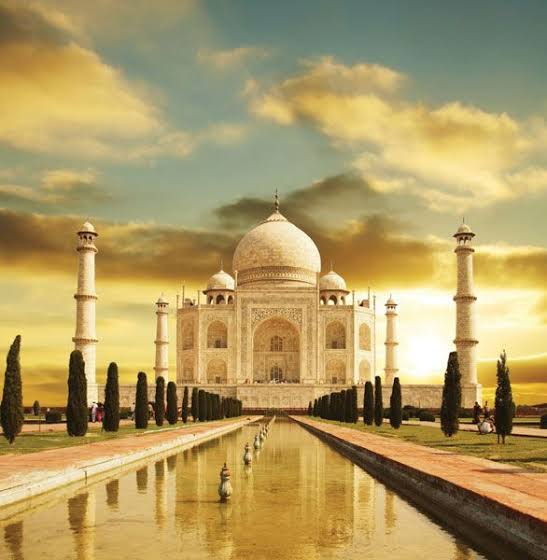
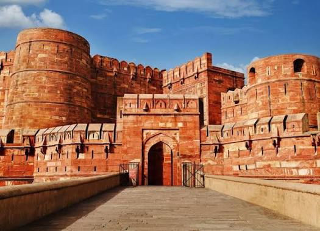
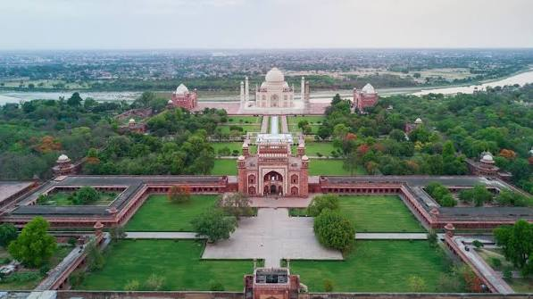

The Taj Mahal is a magnificent white marble monument located in Agra, India.
It was commissioned by Mughal Emperor Shah Jahan in memory of his wife
Mumtaz Mahal. Built between 1631 and 1648, it is admired for its beautiful architecture, perfect symmetry and detailed marble work, making it one of India's most famous historical landmarks.


Agra Fort is another important historical site. The massive red sandstone fort contains palaces, halls and other structures connected with the Mughal period.
Learn more about the Taj Mahal .

Agra has a strong Mughal cultural influence. Visitors can experience traditional crafts, local markets, historic buildings and the city's connection with India's medieval history.
Agra offers a variety of delicious local food influenced by its Mughlai heritage. Visitors should try the famous Agra Petha, a traditional sweet made from ash gourd, along with Dalmoth, kachori, chaat and other local snacks. The city's busy markets are also great places to experience traditional Agra flavours while exploring its historic streets.
The best time to visit Agra is generally from October to March, when the weather is more comfortable for sightseeing. The cooler months are suitable for exploring the Taj Mahal, Agra Fort and other attractions. Visitors can enjoy walking around the city without the intense summer heat, making winter a popular season for tourism.
Important Travel Tip: Start your sightseeing early to make the most of your day and avoid the busiest periods. Wear comfortable footwear, carry drinking water and keep your belongings secure. Plan the attractions in advance and check official information before visiting. Keep some extra time for local traffic when moving between different places in Agra.
Before visiting Agra, it is useful to check official websites for information about attractions, timings and visitor guidelines. These resources can help you plan your trip and learn more about the city's important historical sites.